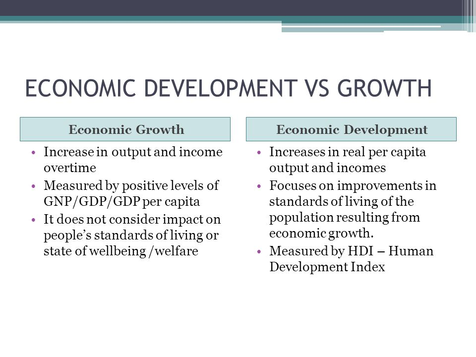
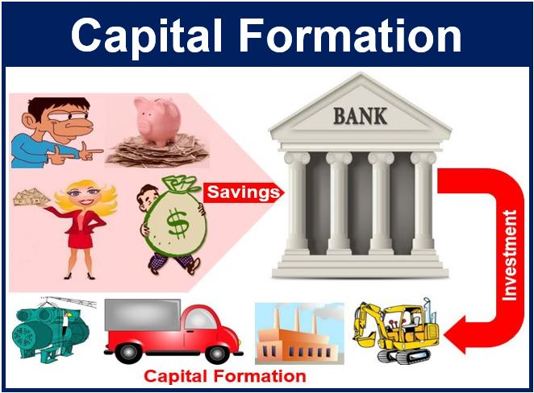

What is Economic Development ?
Economic development is the process of improving the quality of life of a nation, region or community. This typically involves objectives such as social well-being, economic growth and sustainability.
Economic Development is also defined as is the improvement in living standard of people long with reduction in poverty inequality, and unemployment
Economic growth is a defined as the increase in productivity capacity of an economy over time. It is a quantitative term as it represents quantitative increase in production of goods and services in an economy over time. Economic growth is an increase in the production of economic goods and services, compared from one period of time to another. It is commonly measured in terms of the increase in aggregated market value of additional goods and services produced, using estimates such as GDP.
According to M.P.Todaro, "economic growth is steady process by which productivity capacity of an economy increases over time to bring about rising levels of national output and income."
According to Edward Shapiro, "Economic growth can be defined as the increase in economic's output over time."
According to P.A Samuelson and W.D Nordhaus, "Economic growth is an increase in total output of a nation over time."

Capital formation is defined as the process of increasing the stock of real capital in the country. In other words capital formation involves making i more and more capital goods. It is defined in both narrow and wider sense.It increases investment which effects economic development. Capital formation leads to industrialisation, economic welfare, reduction in cost of production and so on. Capital formation is also known as capital accumulation.
For making additions to the stock of Capital, saving and investment are essential.

Process of Capital Formation
The process of capital formation has three distinct stages, which are as follows:-